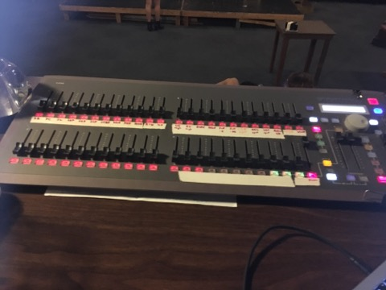
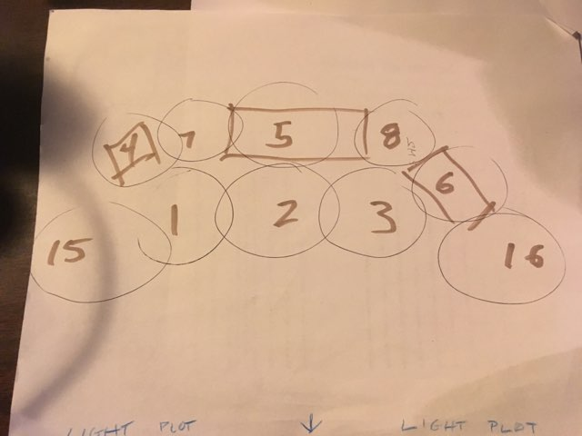

This project took place my junior year of high school. The plays were held in the drama room which had curtains around the walls, and light fixtures across the ceiling that were controlled by the lighting board. THe lights board had different numbers corresponding to different lights, and some of the numbers corresponded to a combination of lights. This play was “Waitress,” a musical. I often kept a paper beside me that mapped out the main lights being used during this musical. The rectangles were different platforms forming the state.
Light teching for a student directed play is pretty straight forward. Put up the lights where the actors are. I was given a script and could mark which lights needed to go up for which scenes. Sometimes directors like to choose exactly what they want for each scene, and sometimes will make your script for you. In this case, the director gave me freedom to just do what I thought looked good. While there isn’t much to think about for scenes that are just dialogue, there is a freedom is choosing what the musical numbers are going to look like.
Lights numbered 9 and 10 were blue and red lights. These were used to set the mood during musical numbers. For example, you could slowly brighten the colored lights as the music started to crescendo or you could dim the rest of the stage lights and turn up the spotlight on the current actor singing to bring more attention to them. Lighting plays a huge role in any play or musical. It draws the crowds attention. You choose where you want them to look and focus on.